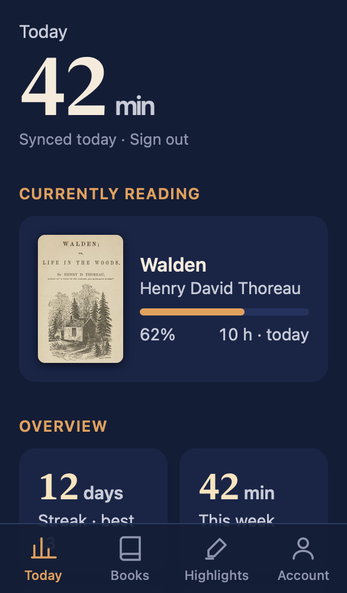
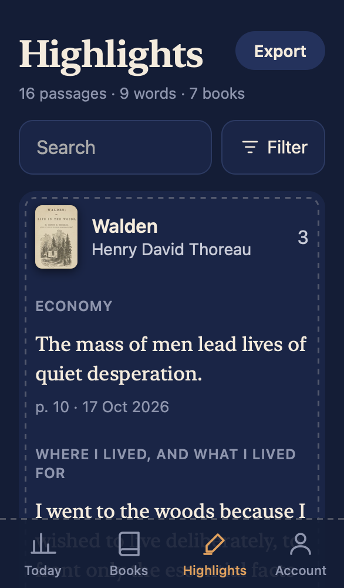
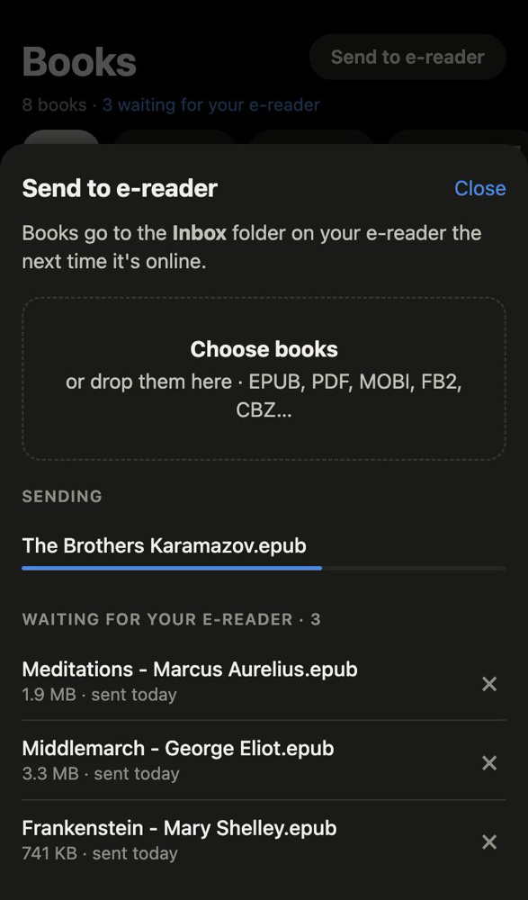
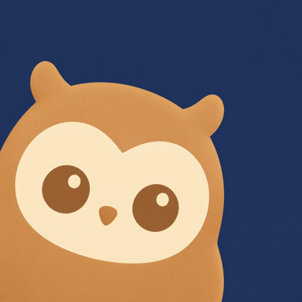

Know where today stands
Minutes read today, this week, month and year, your streak, the last 30 days and a half year calendar.

Readstreak syncs KOReader's reading time, streaks and highlights to a small server you own, then shows them on the web and in iPhone widgets.
Every day you open a book on your Kobo becomes a square on your calendar. The more vivid the thread, the longer you read.
read today
current streak, best 13
read this year
Minutes read today, this week, month and year, your streak, the last 30 days and a half year calendar.

KOReader highlights and the Kindle My Clippings.txt, searchable by text, note, chapter or author. Export what you see to Excel.

Upload EPUB, PDF or MOBI and it lands in the reader's Inbox the next time it's online.

Widgets for today, the book you're on and a reading calendar, plus Lock Screen widgets.
Each reader gets their own account and sees only their own books, stats and highlights.
You turn the pages on E Ink. Your server keeps count, and your phone keeps the streak in sight.
One afternoon of setup. After that nothing needs a tap, a cable or a sync button.
KOReader uploads statistics.sqlite3 whenever WiFi connects and every 30 minutes. The plugin sends each highlight seconds after you make it. Offline changes wait and go out later.
server.py is a WebDAV folder per account plus the web app and API. Deploy it to Railway by following INSTALL.md.
Open the web app in any browser, or install the iPhone app and add the widgets. Everything reads from the same server.
Generate a demo library and sign in as reader. Python 3 is the only requirement.
git clone https://github.com/progremir/readstreak cd readstreak && scripts/demo_data.py ./demo-data AUTH_PASSWORD=demo-password-123 DATA_DIR=./demo-data python3 server.py # open http://localhost:8080
No accounts with us, because there is no us. The only outside request is a cover lookup on Open Library by title and author.
analytics, ads or trackers in the server or the iPhone app
PBKDF2 iterations on every account password
sessions, each listed and revocable on your account page
device password per reader, so a lost Kobo never exposes your account
My Clippings.txt.
Follow INSTALL.md yourself, or hand it to a coding agent and let it do the steps.
Already running a server? Get the iPhone app on TestFlight